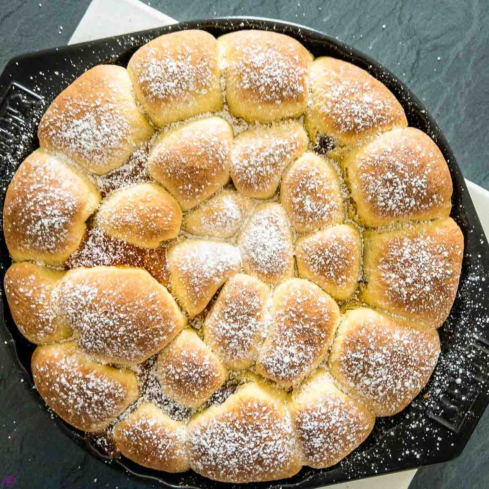
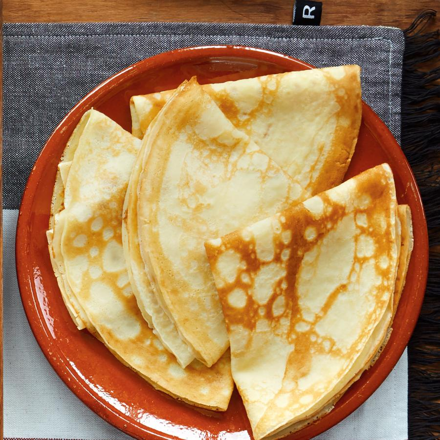
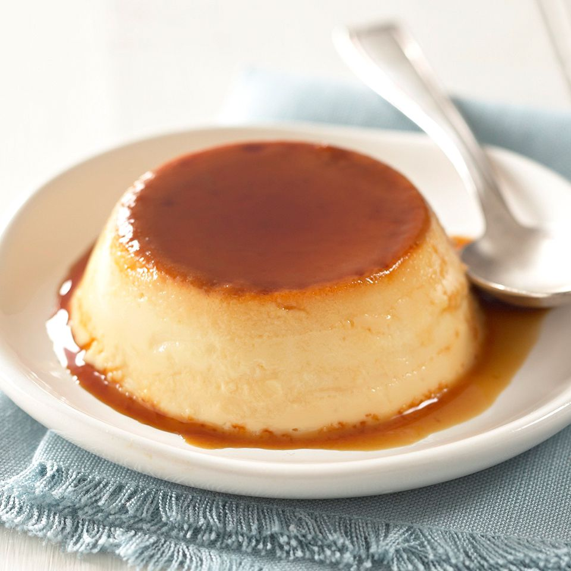
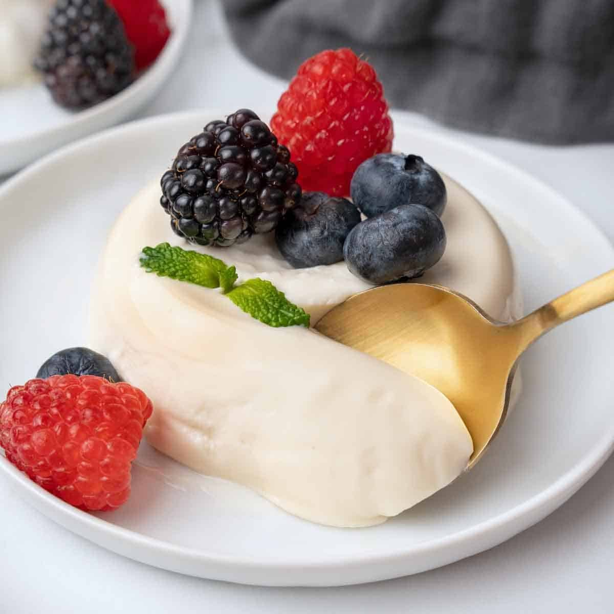
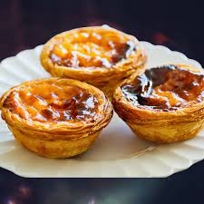
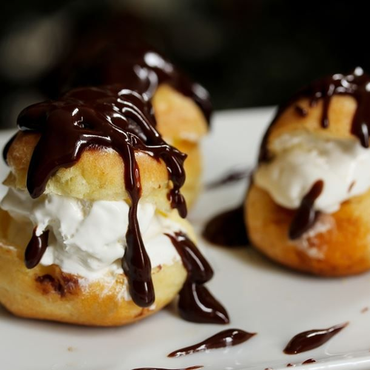
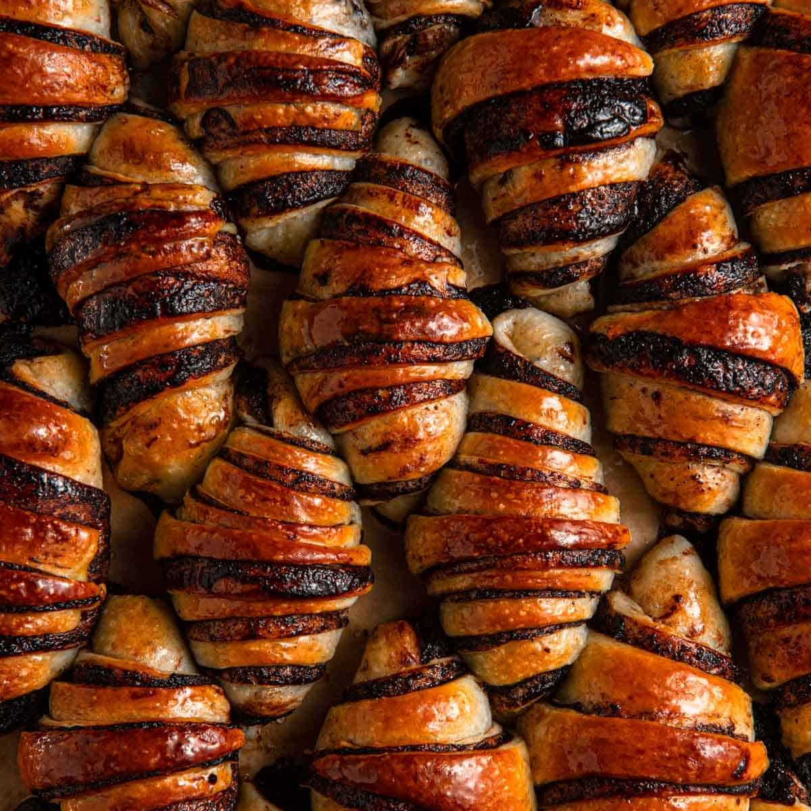
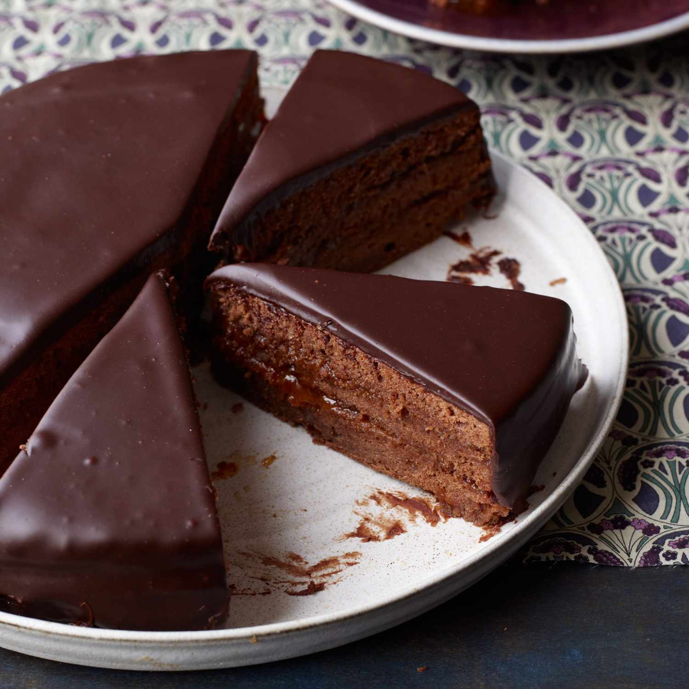
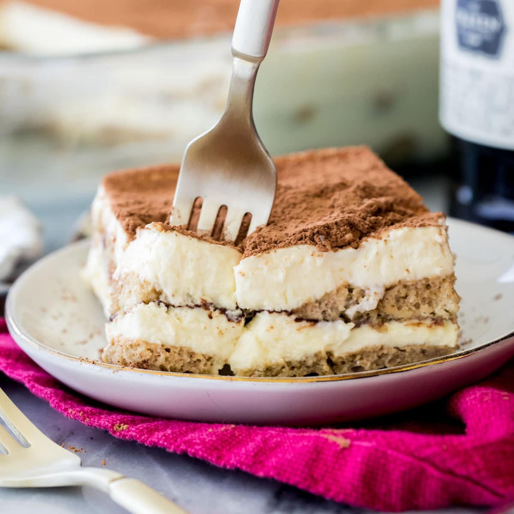

Buchteln
Ingrédients
- 500g de farine
- 250ml de lait
- 100g de beurre
- 100g de sucre
- 1 sachet de levure de boulanger
- Confiture de prune ou d'abricot
Instructions
- Préparer la pâte en mélangeant la farine, le lait, le sucre, le beurre et la levure.
- Laisser lever 1 heure.
- Former des boules de pâte, les garnir de confiture et les disposer dans un moule.
- Cuire à 180°C pendant 25-30 minutes.

Crêpe
Ingrédients
- 250g de farine
- 2 œufs
- 500ml de lait
- 50g de beurre fondu
- Nutella
Instructions
- Préparer la pâte à crêpes avec la farine, les œufs, le lait et le beurre fondu.
- Cuire les crêpes dans une poêle chaude.
- Étaler du Nutella sur chaque crêpe et plier avant de servir.

Flan
Ingrédients
- 1 litre de lait
- 200g de sucre
- 4 œufs
- 100g de farine
- 1 gousse de vanille
Instructions
- Faire chauffer le lait avec la vanille.
- Mélanger les œufs, le sucre et la farine puis verser petit à petit le lait chaud.
- Cuire à feu doux jusqu'à épaississement.
- Verser dans un moule et cuire à 180°C pendant 40 minutes.

Madeleine
Ingrédients
- 200g de farine
- 150g de sucre
- 3 œufs
- 100g de beurre fondu
- 1 cuillère à soupe de zeste de citron
- 1 cuillère à café de levure chimique
Instructions
- Mélanger la farine, le sucre, la levure et les œufs.
- Ajouter le beurre fondu et le zeste de citron.
- Verser la pâte dans des moules à madeleines et cuire à 180°C pendant 12-15 minutes.

Muffin
Ingrédients
- 2 oeufs
- 90g de sucre
- 90ml d'huile
- 100g de yaourt
- 150g de farine
- 7g de levure chimique
- chocolat
Instructions
- Dans un saladier, fouetter les oeufs et le sucre
- Ajouter l'huile, et yaourt et continuer de fouetter
- Insérer graduellement la farine et la levure tout en mélangeant
- Ajouter le chocolat
- Verser la pâte dans des moules préalablement beurrés
- Enfourner le tout a 180 degres celsius pendant 17 minutes

Panna Cotta
Ingrédients
- 500ml de crème liquide
- 100g de sucre
- 1 gousse de vanille
- 2 feuilles de gélatine
Instructions
- Faire chauffer la crème, le sucre et la vanille jusqu'à ébullition.
- Ajouter les feuilles de gélatine trempées et mélanger.
- Verser dans des ramequins et laisser refroidir au réfrigérateur pendant 4 heures.
- Servir avec des fruits frais ou un coulis.

Pastel de Nata
Ingrédients
- 250g de pâte feuilletée
- 300ml de lait
- 100g de sucre
- 3 jaunes d'œufs
- 1 cuillère à soupe de farine
- Zeste de citron
Instructions
- Préparer un mélange de lait, sucre, jaunes d'œufs, farine et zeste de citron.
- Cuire à feu doux jusqu'à ce que le mélange épaississe.
- Découper la pâte feuilletée et la disposer dans des moules.
- Verser la crème dessus et cuire à 220°C pendant 15-20 minutes.

Profiteroles
Ingrédients
- 250ml d'eau
- 100g de beurre
- 150g de farine
- 4 œufs
- 200g de crème chantilly
- Chocolat fondu
Instructions
- Préparer une pâte à choux en chauffant l'eau, le beurre et en ajoutant la farine.
- Ajouter les œufs un à un et former des petites boules.
- Cuire à 180°C pendant 20 minutes.
- Garnir de crème chantilly et napper de chocolat fondu.

Rugelach
Ingrédients
- 250g de farine
- 200g de beurre
- 100g de sucre
- 1 œuf
- 100g de confiture d'abricot
- Noix hachées
Instructions
- Mélanger la farine, le beurre, et le sucre jusqu'à obtenir une pâte sablée.
- Étaler la pâte, couper en triangles, et garnir de confiture et de noix.
- Rouler les triangles et les cuire à 180°C pendant 20 minutes.

Sacher Torte
Ingrédients
- 120g de chocolat noir
- 100g de sucre
- 6 œufs
- 100g de beurre
- 120g de farine
- 150g de confiture d'abricot
- 200g de chocolat pour glaçage
Instructions
- Fondre le chocolat et le beurre.
- Battre les œufs avec le sucre, ajouter la farine, puis le mélange chocolat-beurre.
- Cuire à 180°C pendant 30 minutes.
- Laisser refroidir, puis découper en deux et garnir de confiture d'abricot.
- Glacer avec du chocolat fondu et laisser reposer.

Tiramisu
Ingrédients
- 250g de mascarpone
- 3 œufs
- 100g de sucre
- 30 biscuits à la cuillère
- 150ml de café fort
- Cacao en poudre
Instructions
- Séparer les blancs des jaunes d'œufs, battre les jaunes avec le sucre et ajouter le mascarpone.
- Monter les blancs en neige et les incorporer délicatement.
- Tremper les biscuits dans le café et les disposer dans un plat.
- Recouvrir de la crème mascarpone et répéter l’opération.
- Saupoudrer de cacao et réfrigérer 4 heures.
